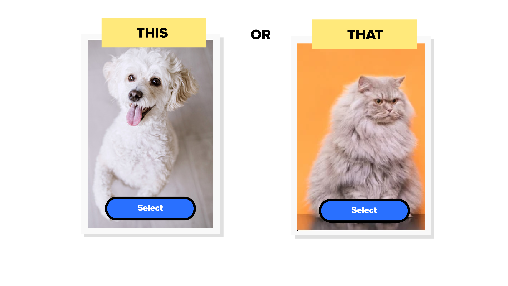

ThisorThat.com
More cool stuff to come in the next few days! -Kyril
Heres a sample of what you might find:

This work is licensed under a
Creative Commons Attribution-NonCommercial 4.0 International License
.